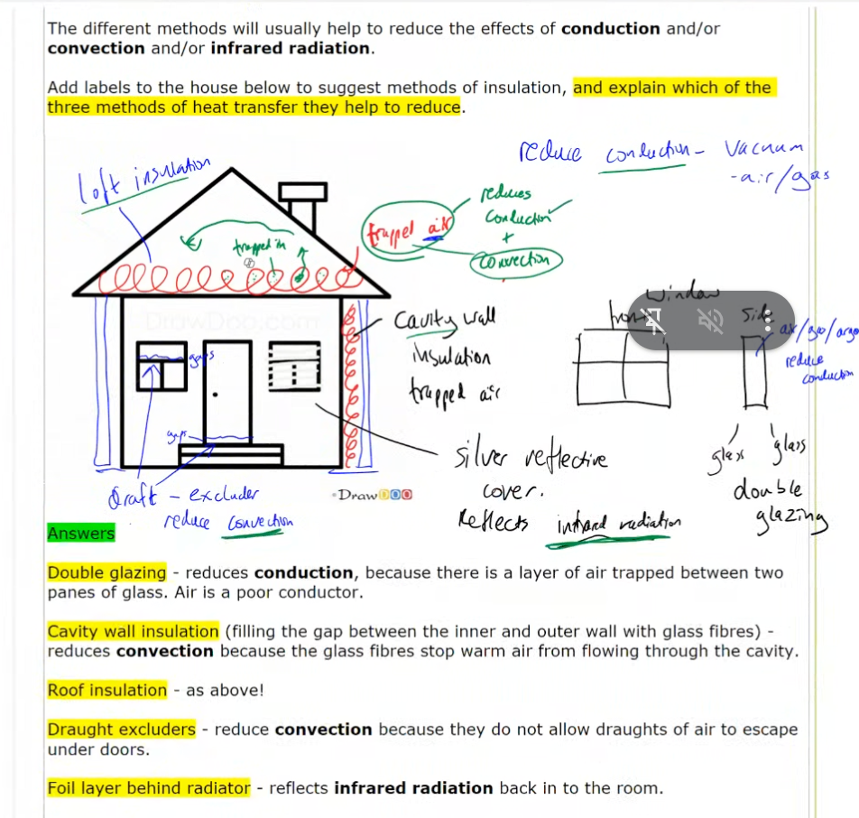

06. House insulation: separate all three mechanisms

Strategy
Explain double glazing precisely.
Full working
Sense check: The key is a sealed, narrow gas layer—not simply “more glass.”
Strategy
Give the two roles of loft/cavity insulation.
Full working
Sense check: “Trapped air” earns two distinct mechanism links.
Strategy
State the ideal limit without confusing it with common construction.
Full working
Sense check: A vacuum is ideal in principle but not the default cavity fill.
Strategy
Identify the clue in a draught.
Full working
Sense check: Flowing air signals convection, not conduction.
Strategy
Explain the foil layer.
Full working
Sense check: Radiation is controlled by surface properties, not by trapped air alone.
Phuc first called a draught “conduction.” Alex corrected it to convection because whole volumes of air move and are replaced. Phuc also needed the second trapped-air role: immobilised pockets stop a convection current as well as reducing conduction.